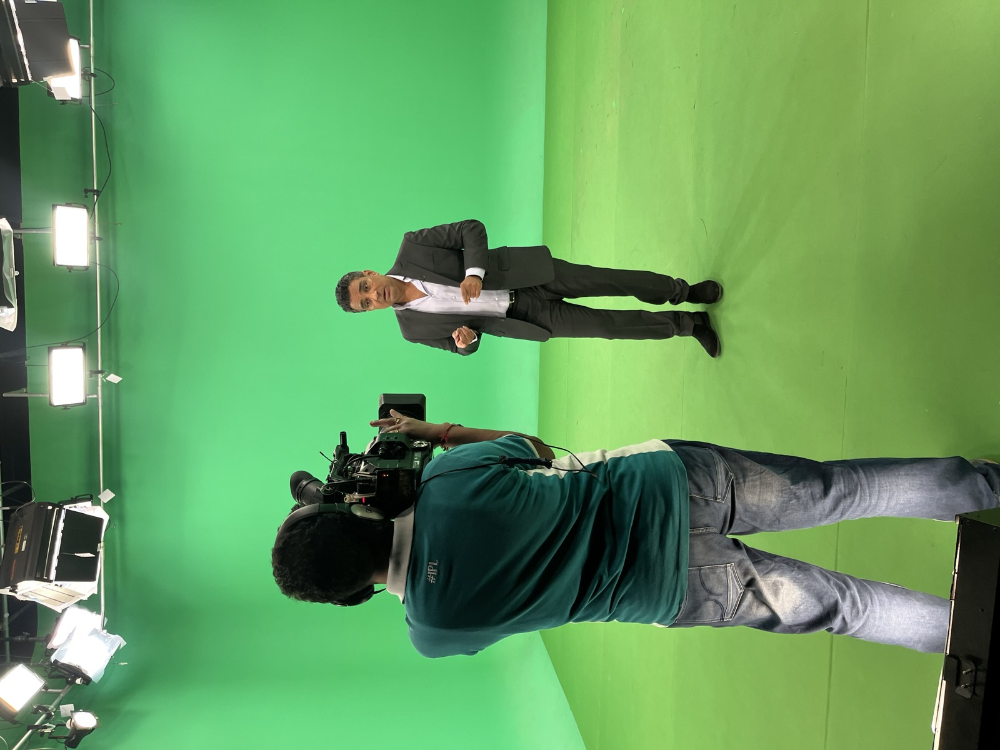
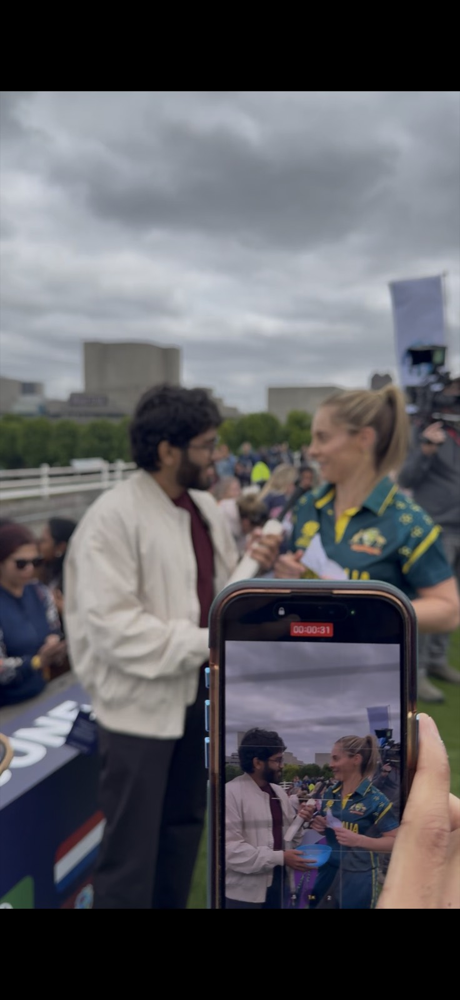
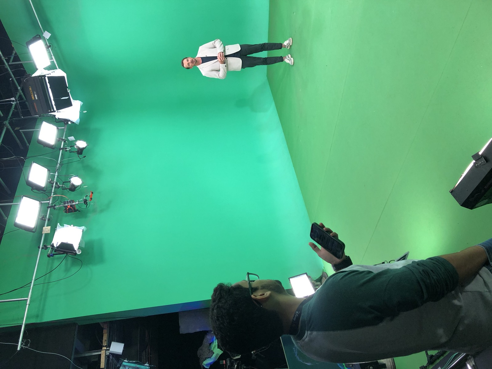
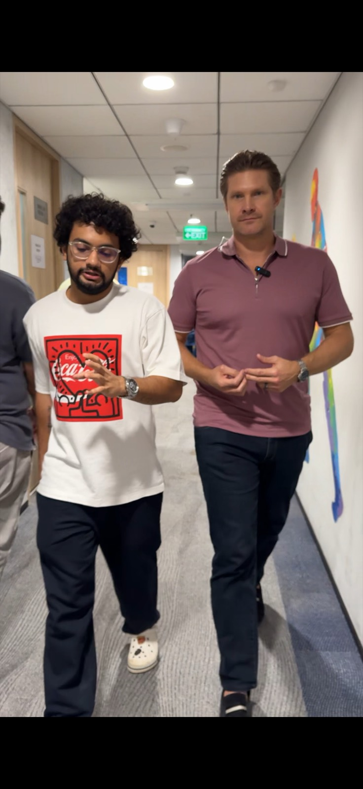
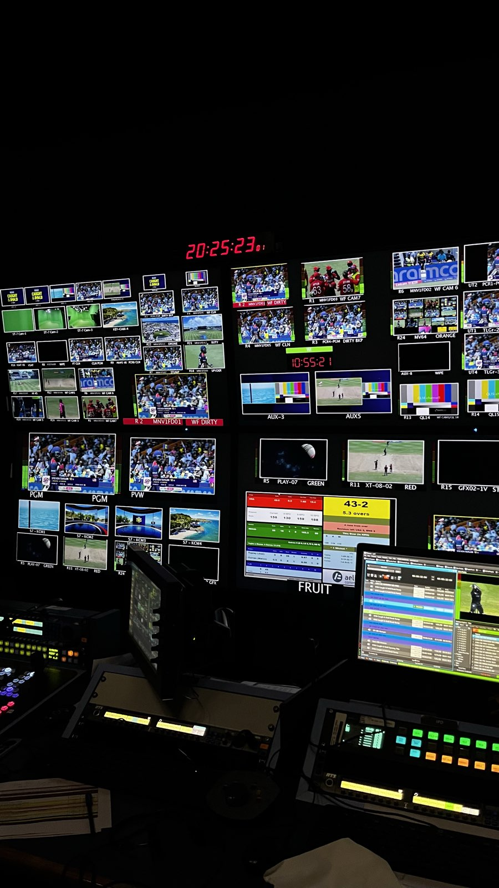
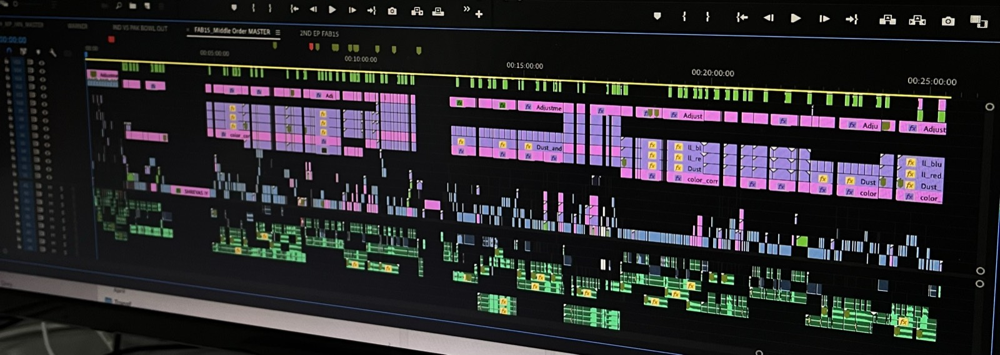
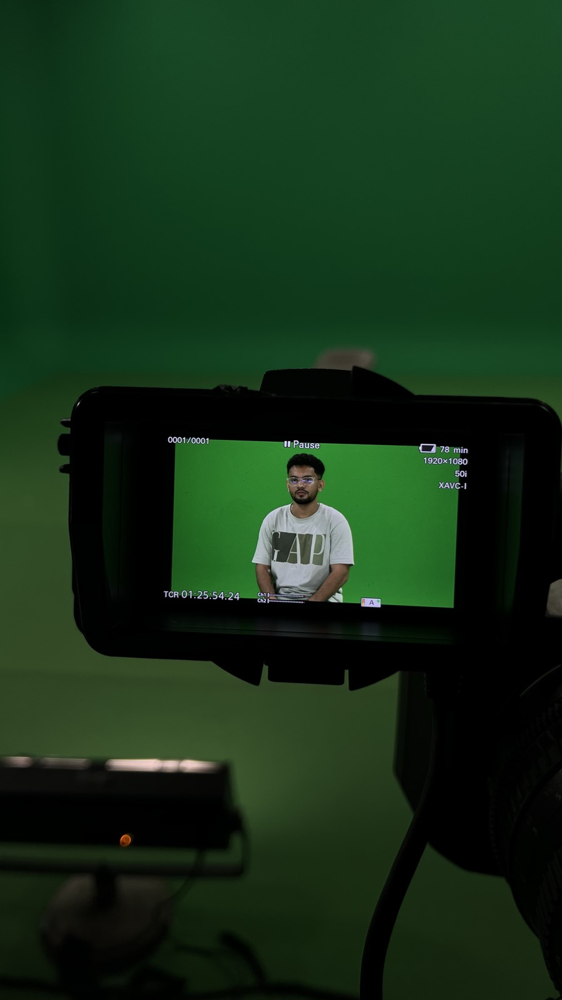
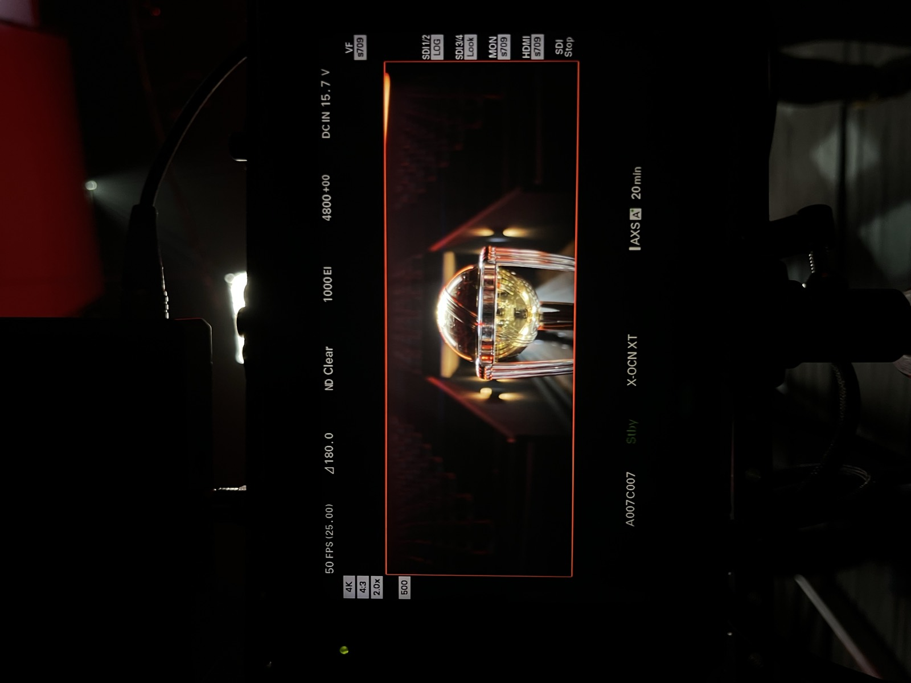
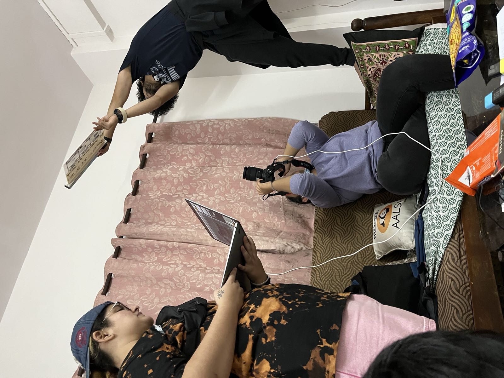
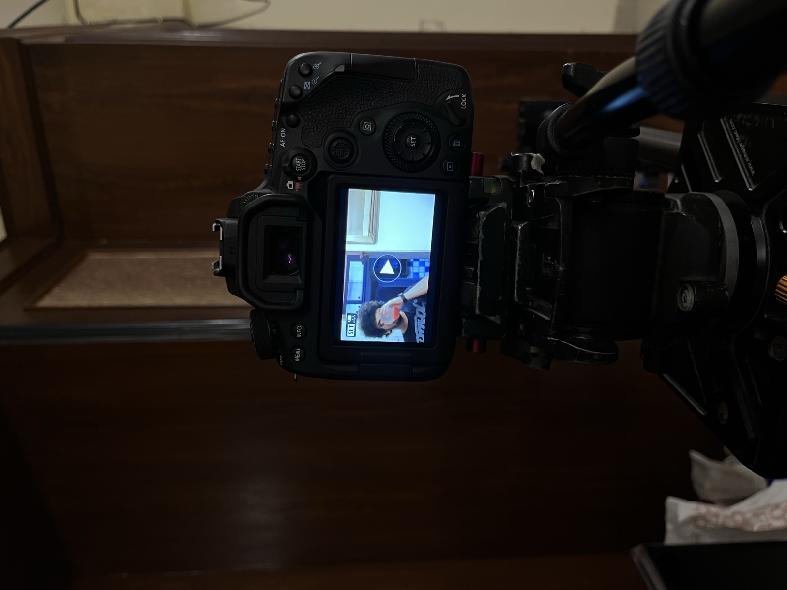

Content & Creative
 The Walt Disney Company / Star India / JioStar · Mumbai · Jul 2023–Jun 2025
The Walt Disney Company / Star India / JioStar · Mumbai · Jul 2023–Jun 2025
Product Intern, Disney Star · Assistant Producer, Marketing, Star India · Associate Producer, Digital Initiatives, JioStar
25+tournaments worked onIndividual
500+short-form piecesIndividual
50+long-form piecesIndividual
25M+ → 50M+Star Sports social audience growth, as a core member of the social teamTeam-level
8B+views · IPLPlatform-level
3B+views · ICC Men's T20 World Cup 2024Platform-level
2B+views · Border-Gavaskar Trophy 2024–25Platform-level
1B+views · ICC Men's Cricket World Cup 2023Platform-level
Premier League2024 social campaign for IndiaCampaign
Wimbledon2023 and 2024 social campaigns for IndiaCampaign
- Planning what goes out and when, based on moments, trends, live action and breaking news. Strategising from pre-launch and launch to post-launch.
- Maintaining monthly content calendars and a daily content tracker for seamless communication across teams.
- Planning content strategy for media days, shoot days with elite talent and creator-led shoots, working with marketing, partnerships, broadcast and creative teams.
- Deciding what rolls out when there is a lot of content, as per the moment.
- Using social listening, platform analytics, and archival, broadcast and partner footage to find innovative ways to deliver content, staying ahead of trends and creative opportunities.
- Creating content buckets and IPs from archival, owned, partner and rights-led footage.
- Managing creators on-field during live broadcast, briefing talent so shoots run to plan.
- Designing and running the workflow, with assets at different stages at once, from strategy and shoot to edit and delivery across teams.
- Writing briefs and directing talent in a fast-paced, limited-time environment.
- Making first cuts, briefing editors, providing assets and quality-checking every piece.
- Delivering platform-native long-form and short-form content to extended teams.
- Sourcing and clearing footage, from archive search to legal sign-off, and delivering highlights to partner and OTT teams.
- Producing partner and branded content.
- Assistant Director on ad films, TVCs and a feature film.
- Production Assistant on a major tournament launch film.
- Conceived, shot and edited a music video.














